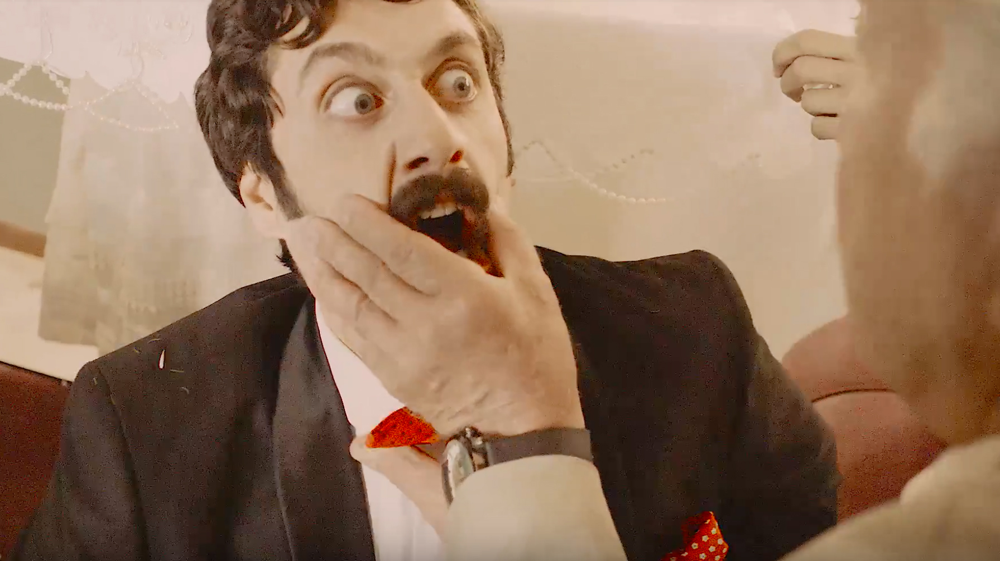

P.

Bamilo TVC Payam Ghorbani
Music Video
4:22
Director/Writing/Visual effects/
Cloth Design
Where the soul resides, Experimental Documentray film
in this ducomentry we explode this question through the persoanal expri-
ence of people who all experienced different loss of self. The film was in-
spired by the true story 'The disembodied lady' by Oliver Sacks. In the film
I want to challenge the thoughts we have of the Self and explore our
Changing relationship with the body.
Watch on Vimeo